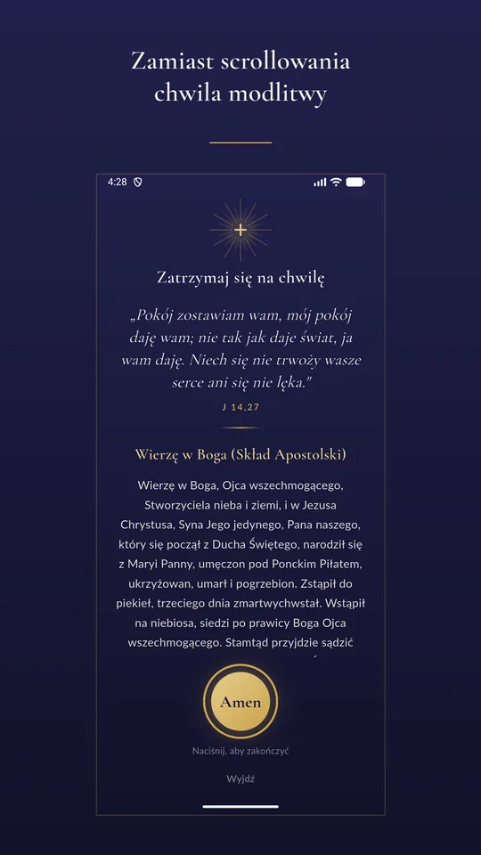
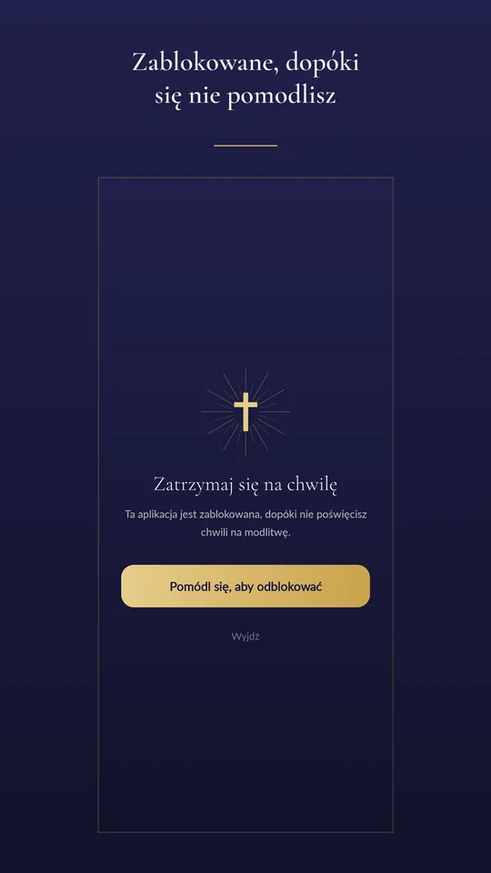
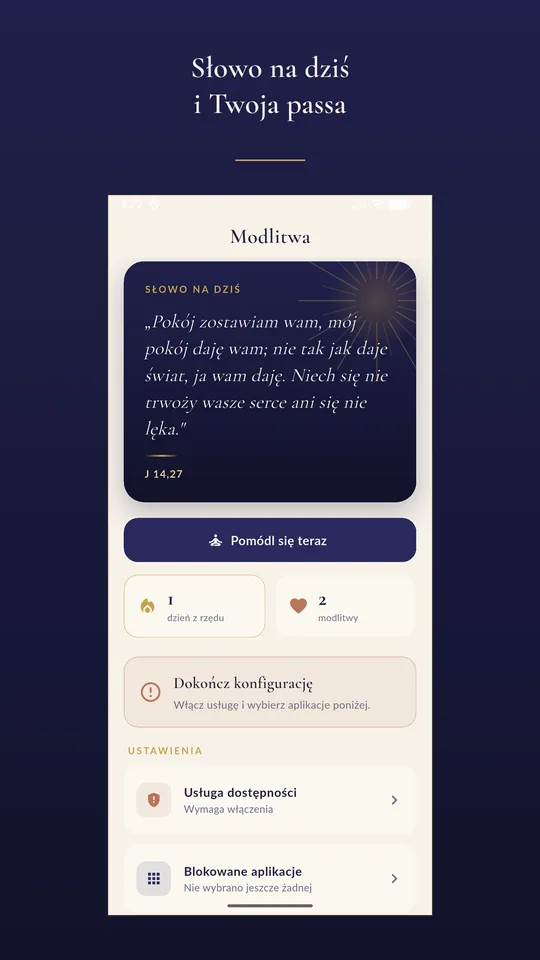

Aplikacja na Androida
Blokuje aplikacje, dopóki się nie pomodlisz
Wybierasz, co Cię pochłania — Instagram, TikTok, YouTube. Zanim to otworzysz, pojawia się zaproszenie do krótkiej modlitwy. Dopiero potem masz dostęp.
Za darmo · tylko Android 8.0 lub nowszy · bez kont, bez reklam
Mam iPhone’a — powiadom mnie o premierzeZnasz to
Sięgasz po telefon, żeby sprawdzić godzinę. Odkładasz go czterdzieści minut później i nie umiesz powiedzieć, co się w międzyczasie stało.
Postanowienie, że dziś będzie inaczej, wytrzymuje do pierwszego odruchu. Bo odruch nie pyta o pozwolenie — po prostu otwiera aplikację.
Modlitwa wchodzi dokładnie w ten moment. Nie zabiera Ci telefonu. Wstawia jedną chwilę między odruch a ekran.
Jak to działa
Wybierasz aplikacje
Media społecznościowe, gry — cokolwiek Cię pochłania.
Próbujesz je otworzyć
Zamiast nich pojawia się zaproszenie do modlitwy.
Modlisz się — i masz dostęp
Po modlitwie aplikacja jest odblokowana do północy. W Plusie możesz blokować dowolną liczbę aplikacji i wybrać krótsze okno — 15 minut, godzinę albo trzy.
Jak wygląda



Co dostajesz za darmo
Blokowanie jednej aplikacji
Wybierasz tę, która najbardziej Cię pochłania. W każdej chwili możesz bezpłatnie zmienić wybór.
Modlitewnik offline
60 modlitw: pacierz, akty, modlitwy poranne i wieczorne, maryjne, modlitwy za bliskich i do świętych, plus rozpiski różańca i Koronki do Miłosierdzia Bożego. Wszystko działa bez internetu — poznaj modlitewnik.
Słowo na dziś
Krótki fragment Pisma Świętego na każdy dzień.
Passa
Ile dni z rzędu udało Ci się zatrzymać na modlitwę.
Codzienne zaproszenie
Powiadomienie o wybranej porze, domyślnie w południe na Anioł Pański.
Za darmo · tylko Android 8.0 lub nowszy
Czego aplikacja nie zrobi
Blokada opiera się na usłudze dostępności Androida. Jeśli wyłączysz ją w ustawieniach telefonu albo użyjesz „wymuś zatrzymanie” lub „wyczyść pamięć”, ochrona przestanie działać do czasu, aż włączysz ją z powrotem — na telefonach Samsung system usuwa wtedy całe uprawnienie.
Aplikacja pokaże wprost, że nie pilnuje, i nie będzie udawać, że potrafi się temu przeciwstawić.
Modlitwa ma wspierać Twoje postanowienie, nie zastępować go.
Modlitwa jest za darmo
Wszystko powyżej jest i pozostanie bezpłatne. Nie sprzedajemy modlitwy.
Opcjonalny Modlitwa Plus dokłada mocniejsze narzędzia samokontroli: blokowanie dowolnej liczby aplikacji, krótkie okna dostępu zamiast odblokowania do północy, harmonogramy, natychmiastową blokadę, Tryb Mszy i tryb „napisz intencję”. To zakup jednorazowy — aktualną cenę zobaczysz w aplikacji, zanim cokolwiek zapłacisz.
Pytania
Czy aplikacja czyta mój ekran?
Nie. Sprawdzamy wyłącznie nazwę aplikacji, która jest na wierzchu — na przykład com.instagram.android. Treści ekranu system technicznie nam nie udostępnia, bo o taki dostęp nie prosimy. Nie odczytujemy też wpisywanego tekstu ani haseł.
Czy działa bez internetu?
Tak. Modlitwy, słowo na dziś i cała blokada działają offline. Sieć jest potrzebna do obsługi zakupu Plusa, sprawdzenia jego stanu i systemowego okna oceny w Google Play.
Czy moje intencje gdzieś trafiają?
Nie. Intencje, ustawienia, passa i lista blokowanych aplikacji zostają na telefonie i nigdy go nie opuszczają. Nie ma kont, reklam ani analityki. Odinstalowanie aplikacji usuwa te dane.
Jedyne, co aplikacja wysyła, to zapytanie do RevenueCat o to, czy masz wykupionego Plusa — z losowym identyfikatorem i danymi technicznymi telefonu, bez Twoich treści. Opisuje to polityka prywatności.
Ile trwa modlitwa przed odblokowaniem?
Tyle, ile zajmuje przeczytanie modlitwy dnia — zwykle kilkadziesiąt sekund. Możesz też wybrać tryb pisania własnej intencji, który wymaga chwili uwagi.
Czy muszę płacić?
Nie. Blokowanie jednej wybranej aplikacji, modlitewnik, słowo na dziś i passa są bezpłatne bez ograniczeń czasowych. Plus jest dodatkiem, nie warunkiem korzystania.
Warto przeczytać
Modlitwa na iPhone’a
Modlitwa na iOS jest w przygotowaniu
Wersja na iPhone’a przechodzi testy przed publikacją w App Store. Korzysta z systemowego Family Controls: wybierasz aplikację, a dostęp odzyskujesz po przeczytaniu modlitwy i naciśnięciu „Amen”. Nie mamy jeszcze potwierdzonej daty premiery.
Jeśli testujesz wersję TestFlight i potrzebujesz pomocy, napisz na devas.app.company@gmail.com. Opisz model iPhone’a, wersję iOS, numer builda i kroki prowadzące do problemu; nie wysyłaj treści swoich intencji.
Chcesz dostać wiadomość, jeśli wersja na iOS się pojawi? Otwórz gotowy e-mail i wyślij go do nas. Samo kliknięcie nie zapisuje Cię na listę.
Zgłoś zainteresowanie e-mailemNie otworzyła się poczta? Napisz na devas.app.company@gmail.com z tematem „Modlitwa iOS — powiadomienie o premierze” i prośbą o powiadomienie.
Tylko wiadomość o premierze, bez newslettera. Zgodę możesz wycofać, pisząc na ten sam adres. Jak wykorzystamy Twój e-mail.